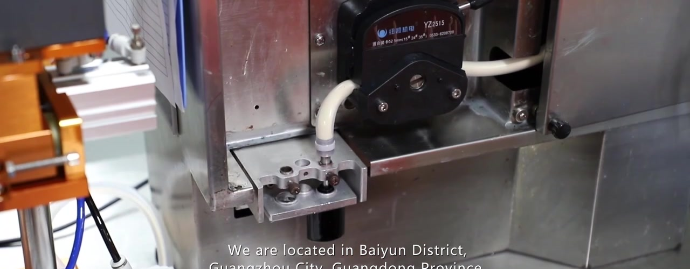
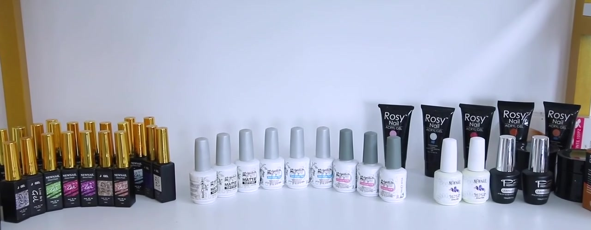
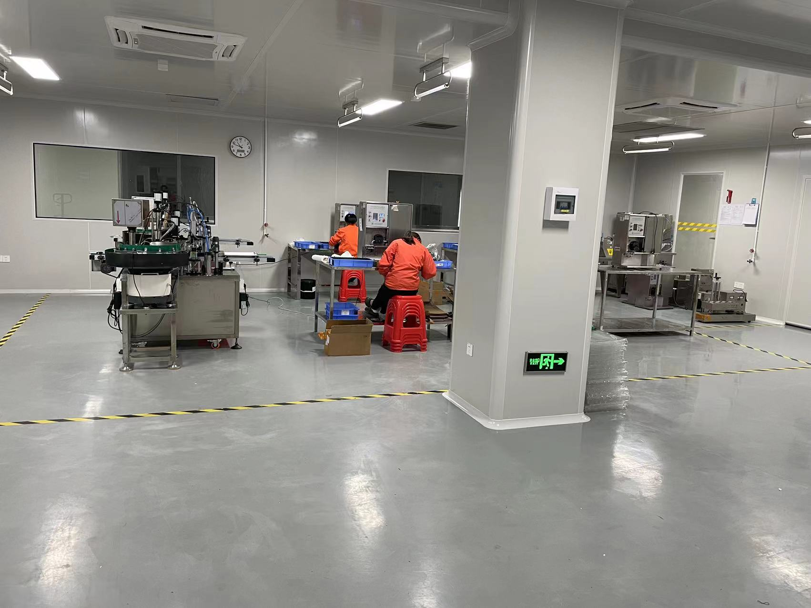
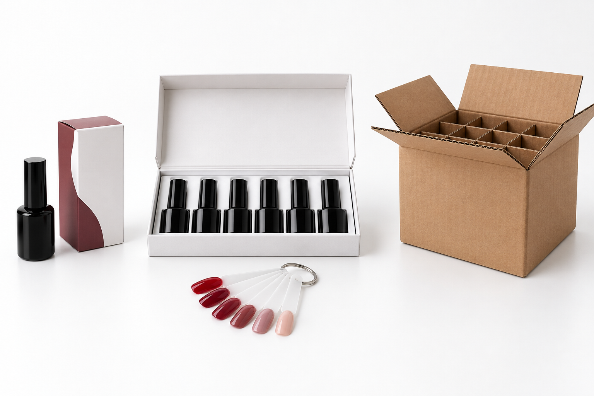

1. Define the project
Prepare your product category, intended users, destination country, shade list, fill quantity and estimated order size. Describe the required finish and application behavior, and identify any ingredient restrictions or claims you want to make. Requirements for a gel polish, an acrylic powder and a cuticle oil will differ.
Ask for a quotation that separates product cost, packaging, artwork or tooling charges, samples, testing and freight. Confirm minimum quantities at product, shade and packaging-component level. A low product MOQ does not automatically mean the same minimum applies to a custom bottle or printed box.
2. Select the formula and packaging together
Record the formula or product code and revision. Choose the bottle or jar, cap, brush, label and retail box as one system. Request compatibility evidence appropriate to the formula and packaging; appearance alone does not establish resistance to leakage, solvent exposure or light.
{kind=link}

3. Prepare logo artwork
Provide a vector logo where available, brand colors, required text and reference images. Ask for the actual packaging dieline and printable area. Check small text, barcode space, shade identifiers and batch-code placement. Agree on the color reference and acceptable variation; a screen preview is not a physical color standard.
4. Review the physical sample
Separate formula approval from decoration approval. A stock sample can help assess the product, but it does not approve your final bottle, label or box. Compare the physical decorated sample with the latest artwork and record any requested changes.
{kind=link}

5. Freeze the production specification
The approval record should identify the sample, formula revision, shade, fill specification, packaging components, artwork version and date. Both sides should retain an agreed reference sample. Define which changes require a new sample or written approval.
{kind=link}

6. Confirm production and inspection milestones
Agree on when production may start, what evidence is required during filling and packing, and how defects will be handled. Set delivery milestones only after identifying dependencies such as component availability, artwork approval and any required testing.
7. Review shipment readiness
Reconcile ordered quantities with the packing list. Review carton marks, batch identification and the documents agreed for the destination and transport mode. Release the shipment only when outstanding issues have been resolved by the authorized parties.
Approval record
| Gate | Record to keep | Decision |
|---|---|---|
| Project scope | Product, destination, quantity and quotation | Confirm or revise |
| Artwork | Dieline and numbered artwork revision | Approve or revise |
| Sample | Formula and decorated sample identifiers | Approve or resample |
| Production | Signed specification and change controls | Authorize start |
| Shipment | Inspection findings and document reconciliation | Release or hold |
Common questions
Can I approve only a digital mockup? A mockup can approve layout, but it cannot establish the feel, print appearance or function of the physical package.
When should I ask about lead time? Ask during quotation, then reconfirm after the specification and packaging are frozen. Record whether the estimate starts from payment, artwork approval or sample approval.
Can I change the logo after approval? Request a written impact assessment covering stock, cost and timing before authorizing the change.
Gel polish carton specification: 360 PCS
GZ New Nail confirms 360 gel polish bottles per master carton. Confirm the bottle size, shade breakdown, inner packing, carton dimensions and gross weight on the order packing specification. Do not apply this count to other nail products or presentation kits.
Before shipment, reconcile the shade/SKU quantities, 360-bottle carton count, carton marks and packing list. The carton quantity is supplier-confirmed; it is not a count established by the video.
{kind=link}
